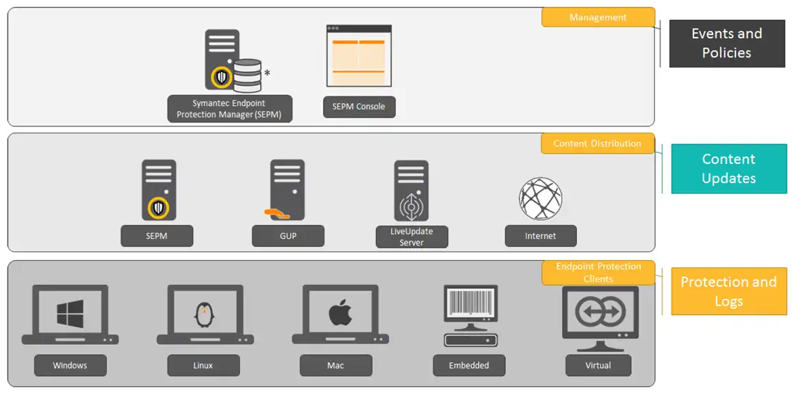
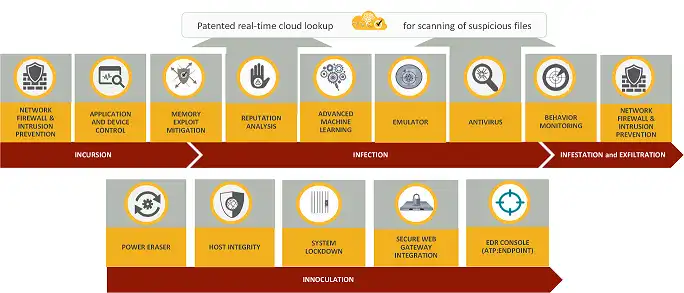

请访问原文链接：Symantec Endpoint Protection 14.5 发布 - 终端安全解决方案 查看最新版。原创作品，严禁商业及个人盈利性网站转载。
作者主页：sysin.org
Symantec 通过创新的安全技术，为传统终端设备和移动终端设备提供全面保护，涵盖攻击面缩减、攻击防御、安全事件防护以及威胁检测与响应等多个方面。所有这些安全防护能力均由 Symantec 全球情报网络提供支持。该网络是全球规模最大的威胁情报网络之一。Symantec 采用统一的单一代理程序解决方案，提供灵活的管理与部署方式，包括纯云端部署、本地部署以及混合部署。
Symantec Endpoint Protection 14.5 新增功能
🛡️ SEPM 登录与性能改进
Symantec Endpoint Protection Manager（SEPM）14.5 对登录模型进行了全面重新设计，显著缩短了控制台的登录时间。此外，新的登录体验还提供实时状态信息，使管理员能够清楚地了解登录过程中后台正在执行的具体操作，从而更直观地掌握登录进度。
🛡️ Windows ARM 代理程序管理
为了支持 ARM 架构硬件日益广泛的应用，SEPM 14.5 新增了在 Windows ARM 设备上部署和管理 SEP 代理程序的功能。
这使组织能够在不影响现有工作流程的情况下，将企业级安全防护和集中式策略管理无缝扩展到新一代终端设备。默认情况下，新安装的客户端会包含 Windows ARM 相关内容，但升级现有客户端时不会包含这些内容。
🛡️ SEPM 支持基于 Active Directory（AD）组的角色管理
SEPM 14.5 现在支持根据管理员所属的 Active Directory（AD）组进行身份验证，从而简化大规模环境下的身份管理。管理员可以为 AD 组创建 SEPM 管理员账户，组内用户即可使用各自的 AD 凭据登录 SEPM。
自动化账户管理：不再需要为每位用户单独创建本地 SEPM 账户。当用户被添加到 AD 或从 AD 中移除时，其 SEPM 访问权限也会自动授予或撤销。
简化合规性管理：通过这种集中式管理方式，可以更轻松地管理用户权限、清理不活跃账户，从而满足严格的审计要求。
🛡️ 点对点（P2P）内容分发功能增强
在 SEPM 14.4 引入的点对点（P2P）内容分发功能基础上，SEPM 14.5 进一步增强了内容分发能力。现在，代理程序可以直接从 SEPM 服务器获取初始内容。此前，代理程序必须从 LiveUpdate 服务器获取这些初始内容。这项改进进一步简化了内容分发流程，加快了远程网络环境中的更新速度，同时减少了对外部更新基础设施的依赖。
🛡️ 支持 SAML 身份验证
为了符合现代身份与访问管理标准，SEPM 14.5 新增了对 SAML 身份验证的支持。通过此功能，组织可以将 Web 管理控制台直接集成到企业现有的单点登录（SSO）身份提供商中，从而增强管理员账户的安全性，并提供更加便捷、统一的集中式登录体验。
🛡️ 支持的升级路径
直接升级到 SEPM 14.5 所需的最低 SEPM 版本为 SEPM 14.3 RU1，或更高版本。
什么是 Symantec Endpoint Protection？
Symantec Endpoint Protection（赛门铁克终端防护，简称 SEP）是一种客户端-服务器架构的安全解决方案，用于保护网络中的笔记本电脑、台式机和服务器，防御恶意软件、安全风险及漏洞威胁。
Symantec Endpoint Protection 将传统病毒防护与高级威胁防护技术相结合，主动保护客户端计算机免受已知和未知威胁的侵害，例如病毒、蠕虫、特洛伊木马和广告软件等。
Symantec Endpoint Protection 还能够防御那些可以绕过传统安全防护措施的复杂攻击，包括 Rootkit（根套件）、零日攻击（Zero-day Attack）以及具有变异能力的间谍软件。
该解决方案具有维护成本低、防护能力强等特点。它通过网络通信，自动保护物理系统和虚拟系统免受攻击。同时，Symantec Endpoint Protection 提供高效且易于部署和使用的管理解决方案。

图：Symantec Endpoint Protection 架构组件
Symantec Endpoint Protection 功能特性
Symantec Endpoint Protection（SEP）通过以下核心功能防御已知和未知威胁。
Symantec Endpoint Protection 采用分层防御（Layered Defense）机制，在攻击发生之前、攻击过程中以及攻击发生之后，为整个网络提供全面保护。
通过提供多种安全防护工具，Symantec Endpoint Protection 能够帮助组织提前提升整体安全防护水平，从而降低遭受攻击的风险。
为了确保网络中的计算机获得完整保护，建议始终启用所有安全防护功能。

Symantec Endpoint Protection 采用全面的安全防护策略，覆盖整个攻击链，通过以下四个阶段保护您的 IT 环境：
- 入侵阶段（Incursion）
- 感染阶段（Infection）
- 扩散与数据外传阶段（Infestation and Exfiltration）
- 修复与免疫阶段（Remediation and Inoculation）
第一阶段 > 入侵 | Incursion
在入侵阶段，黑客通常会利用针对性攻击手段侵入组织的网络，例如社会工程学攻击、零日漏洞、SQL 注入、定向恶意软件攻击或其他攻击方式。
Symantec Endpoint Protection 通过以下技术，在威胁进入系统之前提供防护：
入侵防御/防火墙（Intrusion Prevention/Firewall，网络威胁防护）：分析所有入站和出站网络流量，并提供浏览器防护功能，在威胁能够在计算机上执行之前将其阻止 (sysin)。基于规则的防火墙和浏览器防护能够有效抵御基于 Web 的攻击。
应用程序控制（Application Control）：控制文件访问和注册表访问，并限制进程的运行权限，确保应用程序按照既定规则执行。
设备控制（Device Control）：限制对指定硬件设备的访问，并控制允许哪些类型的设备上传或下载信息。
内存漏洞利用缓解（Memory Exploit Mitigation）：针对尚未获得厂商安全补丁的软件中的零日漏洞利用行为进行防护，例如 Heap Spray（堆喷射攻击）、SEHOP 覆盖攻击以及 Java 相关漏洞利用攻击。
第二阶段 > 感染 | Infection
在针对性攻击中，黑客通常会利用社会工程学攻击、零日漏洞、SQL 注入、定向恶意软件或其他方式侵入组织网络。
Symantec Endpoint Protection 利用以下技术，在威胁感染系统之前检测并阻止这些攻击：
内存漏洞利用缓解（Memory Exploit Mitigation）：检测恶意软件及其利用内存漏洞实施攻击的行为。
文件信誉分析（File Reputation Analysis，Insight）：基于人工智能技术，并利用 Symantec 全球威胁情报网络进行分析。该高级分析技术能够检查来自用户、网站和文件的数十亿条关联数据，以识别并防御快速变异的恶意软件。通过分析文件的关键属性（例如文件下载来源），Symantec 可以在文件到达客户端计算机之前，准确判断文件是否安全，并为其分配相应的信誉评分。
高级机器学习（Advanced Machine Learning）：分析全球威胁情报网络中包含的数万亿条良性文件和恶意文件样本数据。高级机器学习是一种无需依赖传统病毒特征码的检测技术，能够在恶意软件执行之前阻止新的恶意软件变种。
高速模拟执行（High-speed Emulation）：通过识别使用多态自定义加壳技术隐藏的恶意软件，提升威胁检测能力。扫描引擎会在轻量级虚拟机中，以毫秒级速度运行每个文件，使隐藏的威胁暴露其恶意行为，从而同时提高检测率和系统性能。
恶意软件防护（Malware Protection）：使用基于特征码的防病毒技术和文件启发式分析技术，检测并清除系统中的恶意软件，防御病毒、蠕虫、木马、间谍软件、僵尸网络程序、广告软件和 Rootkit (s) 等威胁。
行为分析（Behavioral Analysis）：利用机器学习技术提供零日威胁防护。通过实时监控程序运行过程中的近 1,400 种文件行为，判断文件的风险等级，从而阻止新出现的和未知的威胁。
自适应防护（Adaptive Protection）：利用行为分析引擎、全球威胁遥测数据和安全专家的专业知识，管理可信应用程序执行的潜在高风险行为，从而缩小系统的攻击面。
第三阶段 > 扩散与数据外传 | Infestation and Exfiltration
数据外传（Data Exfiltration）是指未经授权将数据从计算机中传输出去的行为。
一旦入侵者控制了目标系统，就可能窃取知识产权或其他机密数据。攻击者还会利用窃取的信息进行分析、进一步攻击或实施欺诈活动。
此阶段主要通过以下技术提供防护：
入侵防御/防火墙（Intrusion Prevention/Firewall）：在威胁通过网络传播的过程中阻止其活动。
行为分析（Behavioral Analysis）：帮助阻止恶意软件感染在系统之间进一步扩散。
第四阶段 > 修复与免疫 | Remediation and Inoculation
Symantec Endpoint Protection 提供统一的管理控制台和客户端代理程序，能够为不同操作系统、平台以及各种规模的企业提供安全防护。
Power Eraser：一种强力威胁清除工具，可以通过远程方式触发，用于处理高级持续性威胁（APT）和难以清除的顽固恶意软件。
主机完整性（Host Integrity）：通过强制执行安全策略、检测未经授权的更改以及开展损害评估，确保终端设备符合安全防护和合规性要求。如果受管系统不符合预设要求，Host Integrity 会将其隔离。
系统锁定（System Lockdown）：允许已知安全的应用程序运行，或者阻止已知恶意的应用程序运行。在两种工作模式下，System Lockdown 都会利用文件校验和及文件位置等参数，判断应用程序是否获得许可。该功能特别适用于自助服务终端等只允许运行单一指定应用程序的场景。
云安全 Web 网关集成（Cloud Secure Web Gateway Integration）：通过可编程 REST API 实现与 Secure Web Gateway（安全 Web 网关）的集成，帮助快速阻止客户端计算机上的感染扩散。
EDR 控制台集成（EDR Console Integration）：Symantec Endpoint Protection 与 Symantec EDR 集成，通过对攻击进行优先级排序，更快速地检测、响应和阻止针对性攻击及高级持续性威胁（APT）。EDR（Endpoint Detection and Response，终端检测与响应）能力已内置于 Symantec Endpoint Protection 中，因此无需额外部署其他代理程序。
防御的攻击类型
Symantec Endpoint Protection 技术能够防御哪些类型的攻击？
下表展示了 Symantec Endpoint Protection 的不同安全技术所能够防御的攻击类型。
| 攻击类型 | 高级机器学习 | 启发式分析 | 入侵防御 | 网络防护 | 策略锁定 |
|---|---|---|---|---|---|
| 零日攻击（Zero-day） | √ | √ | √ | √ | |
| 社会工程学攻击（Social Engineering） | √ | √ | √ | √ | √ |
| 勒索软件（Ransomware） | √ | √ | √ | √ | |
| 定向攻击（Targeted Attack） | √ | √ | √ | √ | |
| 高级持续性威胁（APT） | √ | √ | √ | ||
| 路过式下载攻击（Drive-by Download） | √ | √ |
文件信息
Symantec Endpoint Protection 14 RTM v14.0.1904.0000 | October 28, 2016 | 简体中文版、繁体中文版、英文版
客户端 Clients
- Symantec_Endpoint_Protection_14.0.0_All_Clients_CS.zip
- Symantec_Endpoint_Protection_14.0.0_All_Clients_CH.zip
- Symantec_Endpoint_Protection_14.0.0_All_Clients_EN.zip
服务端 SEPM
- Symantec_Endpoint_Protection_14.0.0_SEPM_CS.exe
- Symantec_Endpoint_Protection_14.0.0_SEPM_CH.exe
- Symantec_Endpoint_Protection_14.0.0_SEPM_EN.exe
完整包 = Clients + SEPM
- Symantec_Endpoint_Protection_14.0.0_Full_Installation_CS.exe
- Symantec_Endpoint_Protection_14.0.0_Full_Installation_CH.exe
- Symantec_Endpoint_Protection_14.0.0_Full_Installation_EN.exe
Symantec Endpoint Protection 14.5 v14.5.172.0000 | November 3rd, 2026 | 简体中文版、繁体中文版、英文版
客户端 Clients
- Symantec_Endpoint_Protection_14.5.0_All_Clients_CS.zip
- Symantec_Endpoint_Protection_14.5.0_All_Clients_CH.zip
- Symantec_Endpoint_Protection_14.5.0_All_Clients_EN.zip
服务端 SEPM
- Symantec_Endpoint_Protection_14.5.0_SEPM_CS.exe
- Symantec_Endpoint_Protection_14.5.0_SEPM_CH.exe
- Symantec_Endpoint_Protection_14.5.0_SEPM_EN.exe
完整包 = Clients + SEPM
- Symantec_Endpoint_Protection_14.5.0_Full_Installation_CS.exe
- Symantec_Endpoint_Protection_14.5.0_Full_Installation_CH.exe
- Symantec_Endpoint_Protection_14.5.0_Full_Installation_EN.exe
Symantec Endpoint Protection 14 系列更新：
更多：Windows 下载汇总

文章用于推荐和分享优秀的软件产品及其相关技术，所有软件提供免费版或试用版。内容若侵犯了您的版权，请联系作者删除。如果您喜欢这篇文章，或者觉得它对您有所帮助，亦或发现有不当之处；欢迎发表评论，也欢迎分享这个网站，或者赞赏一下，谢谢！提示：捐赠或赞赏属于自愿赠予行为，提交后即表示您对作者的支持与认可。为避免误操作，请在确认前仔细检查金额，支付完成后将无法撤销或退还。
 支付宝赞赏
支付宝赞赏  微信赞赏
微信赞赏赞赏一下
敬请注册！点击 “登录” - “用户注册”（已知不支持 21.cn/189.cn 邮箱）。 请勿使用联合登录（已关闭）。